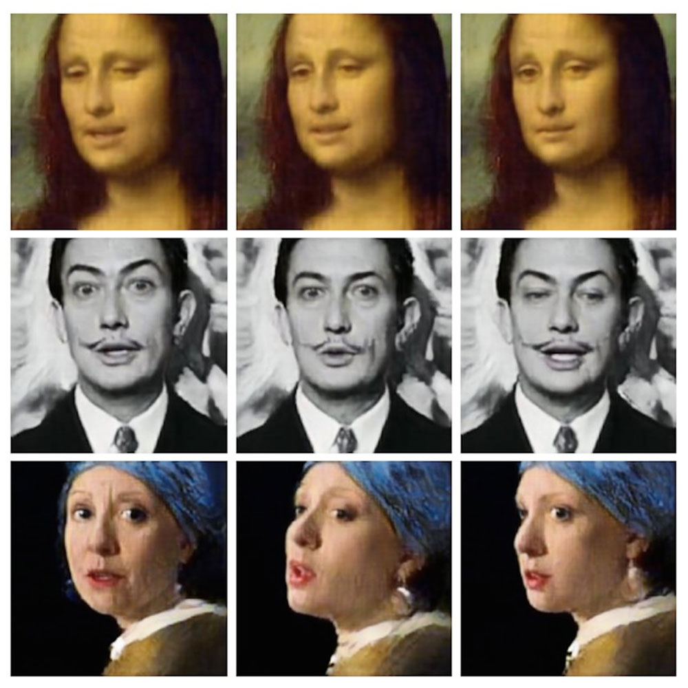
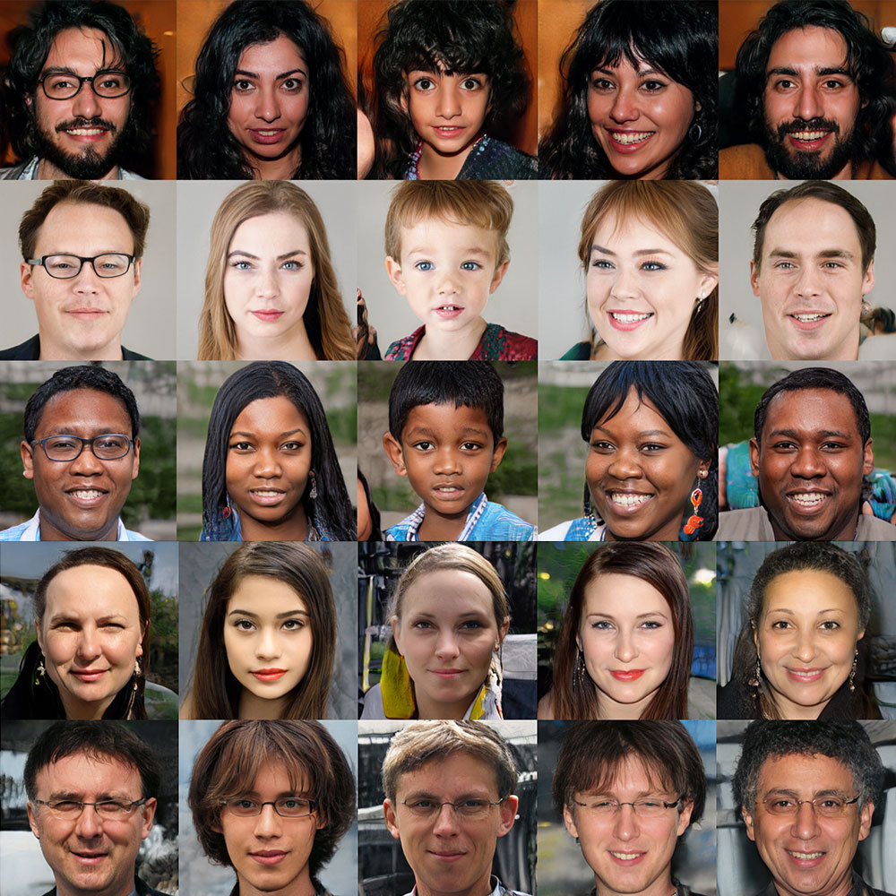

Deepfake Mona Lisa’yı hayata döndürdü
Deepfake hakkındaki bir çalışma Mayıs 2019 arxiv‘de yayımlandı. Çalışma, Altmetric’in listesinde ilk sıradan verildi.Samsung’tan Deepfake yapay zeka algoritması, Mona Lisa’yı adeta hayata geri döndürdü. Bir fotoğraf ya da resimden bir video oluşturmanın yolu açıldı. Üstelik o kadar gerçekçi ki… Eğitilen algoritmalar bir fotoğraf ya da resmi canlandırabiliyor. Yaşamımızda hiç görmediğimiz hatta hiçbir hareketli görüntüsü olmayan kişilerin canlı görünümlü görüntülerini oluşturmak artık mümkün.
Bilim insanları istatistiklerin kesin olmadığına dikkat çekiyor
Yayınlarda sadece p değeri baz alınarak yapılan istatistiksel anlamlılık değerlendirmesi uzun süredir akademide tartışılan konulardan biri. Pek çok araştırmacı çalışmalarında diğer istatistiksel çıktıları değerlendirmeden sadece p değeri üzerinden sonuca ulaşıyor. Ancak bu durum bilerek ya da bilmeyerek hatalı değerlendirmeler ve sonuçların yayınlanmasına sebep oluyor. Akademide bu konuyla ilgili farkındalığı arttırmak için pek çok bilim insanı grubu çeşitli yayınlar yaptı ve p değerinin hatalı kullanımına dikkat çekti.
